Next: หัวข้อสรุป
Up: ตัวอย่างการวิเคราะห์ความน่าเชื่อถือ และการคุ้มครองจากความเสียหาย
Previous: ตัวอย่าง: การคำนวณค่าความน่าเชื่อถือของระบบขนาน
Contents
Index
การคุ้มครองจากการเสียหาย
การคุ้มครองจากการเสียหาย (Fault Coverage) คือการวัดความสามารถของระบบที่จะคุ้มครองจากความล้มเหลวหรือเสียหาย ตัวอย่างเช่นระบบคอมพิวเตอร์ที่ต้องการการเปลี่ยนการทำงานของระบบ (Reconfiguration) ในการเพิ่มความน่าเชื่อถือต้องการคุณสมบัติการคุ้มครองจากความเสียหายที่ดีในการทำงาน ในระบบแบบขนานที่ประกอบด้วยสามโมดูล ถ้าเราสมมุติให้ระบบมีการคุ้มครองจากความเสียหายที่สมบูรณ์เพียงหนึ่งโมดูลเพียงพอในการทำงานของระบบ ความน่าเชื่อถือของระบบคำนวณจาก ความน่าจะเป็นที่หนึ่งโมดูลในสามโมดูลยังทำงาน
อย่างไรก็ตาม สมมุติฐานที่ให้ระบบมีการคุ้มครองจากความเสียหายที่สมบูรณ์ ไม่ได้คำนึงถึงว่าระบบอาจจะไม่สามารถใช้การสำรองการทำงานของอุปกรณ์ได้ เนื่องจากเหตุผลต่างๆ อันได้แก่การที่ไม่สามารถตรวจสอบได้ว่าโมดูลเสีย, โมดูลถูกถอดออก หรือกำลังถูกแทนที่
เพื่อแสดงถึงปัญหาที่กล่าวมา พิจารณาระบบในรูป 11.7 ซึ่งประกอบด้วยสองโมดูลที่เหมือนกัน สมมุติให้ โมดูลหนึ่งเป็นโมดูลหลัก และ โมดูลสองเป็นโมดูลสำรอง โมดูลสำรองจะถูกแทนที่โมดูลหลักในกรณีที่โมดูลหลักเสีย ในอีกนัยหนึ่ง ระบบดังกล่าวทำงานอยู่ในรูปแบบของระบบสำรองแสตนบาย ภายใต้สภาวะปกติ ระบบจะทำงานอย่างถูกต้อง ถ้าทั้งสองโมดูลทำงานปกติ แต่ในความเป็นจริงจะต้องสามารถตรวจจับได้ว่าโมดูลหลักเสียหาย เพื่อจัดการสลับการทำงานให้โมดูลรองอย่างถูกต้อง
Figure 11.7:
แผนภาพกล่องความน่าเชื่อถือของระบบขนานที่ประกอบด้วยสองโมดูล
เพื่อแสดงผลกระทบของการคุ้มครองจากความเสียหาย
|
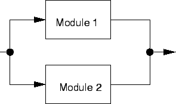
|
ระบบแบบขนานที่ประกอบด้วนสองโมดูลจะสามารถทำงานได้ก็ต่อเมื่อ
- โมดูลหนึ่งทำงานได้อย่างถูกต้อง หรือ
- โมดูลสองทำงานได้อย่างถูกต้อง และโมดูลหนึ่งเสีย จากนั้นสามารถตรวจสอบได้ว่าโมดูลหนึ่งเสีย และทำการแทนโมดูลสองด้วยได้อย่างเหมาะสม
ความน่าจะเป็นของเหตุการณ์ทั้งสองสามารถเขียนเป็นสมการในรูปของความน่าเชื่อถือของโมดูล และ การคุ้มครองจากความเสียหายได้ดังต่อไปนี้
เมื่อ 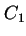 เป็นการคุ้มครองจากความเสียหายของโมดูล 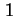, 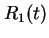 เป็นค่าความน่าเชื่อถือของโมดูล , และ 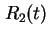 เป็นค่าความน่าเชื่อถือของโมดูล 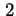 ถ้าความน่าเชื่อถือ และการคุ้มครองจากความเสียหายเท่ากันทั้งสองโมดูล ความน่าเชื่อถือจะเท่ากับ
เมื่อ  เป็นค่าความน่าเชื่อถือของโมดูล และ
เป็นค่าความน่าเชื่อถือของโมดูล และ  เป็นการคุ้มครองจากความเสียหายของโมดูล จะสังเกตุได้ว่า ถ้าการคุ้มครองจากความเสียหายเท่ากับศูนย์ 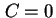 ค่าความน่าเชื่อถือของระบบจะเท่ากับความน่าเชื่อถือของโมดูลเดียว
ถ้าค่าการคุ้มครองจากความเสียหายเท่ากับหนึ่ง 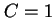 เราสามารถยุบสมการได้เป็น
เป็นการคุ้มครองจากความเสียหายของโมดูล จะสังเกตุได้ว่า ถ้าการคุ้มครองจากความเสียหายเท่ากับศูนย์ 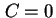 ค่าความน่าเชื่อถือของระบบจะเท่ากับความน่าเชื่อถือของโมดูลเดียว
ถ้าค่าการคุ้มครองจากความเสียหายเท่ากับหนึ่ง 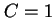 เราสามารถยุบสมการได้เป็น
ซึ่งก็คือความน่าเชื่อถือของระบบขนานนั้นเอง
รูป 11.8 แสดงผลกระทบจากการคุ้มครองจากความเสียหายของระบบแบบขนานที่ประกอบด้วยสองโมดูล จากรูปแสดงความสัมพันธ์ระหว่างความน่าเชื่อถือของระบบเทียบกับค่าการคุ้มครองจากความเสียหาย ที่ค่าความน่าเชื่อถือของโมดูล  จะเห็นได้ว่าค่าความน่าเชื่อถือของระบบมีความสัมพันธ์แบบเชิงเส้นกับค่าการคุ้มครองจากความเสียหาย พิจารณาที่ ค่าความน่าเชื่อถือของระบบเท่ากับ 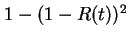 ซึ่งเป็นค่าความน่าเชื่อถือของระบบขนานในอุดมคติ และ ที่ ค่าความน่าเชื่อถือของระบบเท่ากับ ซึ่งเป็นค่าความน่าเชื่อถือของระบบที่ประกอบด้วยหนึ่งโมดูล
จะเห็นได้ว่าค่าความน่าเชื่อถือของระบบมีความสัมพันธ์แบบเชิงเส้นกับค่าการคุ้มครองจากความเสียหาย พิจารณาที่ ค่าความน่าเชื่อถือของระบบเท่ากับ 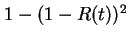 ซึ่งเป็นค่าความน่าเชื่อถือของระบบขนานในอุดมคติ และ ที่ ค่าความน่าเชื่อถือของระบบเท่ากับ ซึ่งเป็นค่าความน่าเชื่อถือของระบบที่ประกอบด้วยหนึ่งโมดูล
Figure 11.8:
ผลกระทบจากการคุ้มครองจากความเสียหายของระบบแบบขนานที่ประกอบด้วยสองโมดูล
|
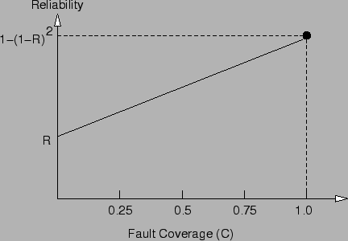
|
จากการแสดงผลการคำนวณขั้นต้นจะเห็นได้ว่าการเสียหายของโมดูลที่สองไม่มีความสำคัญ เว้นแต่ว่าโมดูลที่สองได้ทำงานแทนโมดูลหลัก นั่นคือระบบจะสามารถทำงานอย่างปกติตราบเท่าโมดูลหลักสามารถทำงานได้อย่างปกติ แม้ว่าโมดูลสำรองจะเสีย ในหลายระบบสภาวะการดังกล่าวอาจจะไม่สามารถใช้งานได้ ตัวอย่างเช่น พิจารณาระบบที่ประกอบด้วยสองโมดูล และระบบจะทำการเปรียบเทียบเอาท์พุทที่ได้จากทั้งสองโมดูลเพื่อทำการตรวจสอบข้อผิดพลาด ถ้าสามารถตรวจจับความเสียหายได้ ทั้งสองโมดูลจะเข้าสู่ขั้นตอนการตรวจสอบความเสียหายเพื่อพิสูจน์ทราบว่าโมดูลไหนเสีย เมื่อสามารถทราบถึงโมดูลที่เสีย ระบบจะใช้โมดูลที่ปกติในการทำงานต่อไป ถ้าไม่สามารถหาได้ว่าโมดูลไหนเสีย ระบบจะหยุดทำงาน ดังนั้นจึงจำเป็นต้องรวมผลกระทบจากการที่ไม่สามารถตรวจสอบความเสียหายได้เข้าในการคำนวณความน่าเชื่อถือด้วย
พิจารณาระบบในรูป 11.7 ซึ่งประกอบด้วยสองโมดูลที่เหมือนกัน โดยเพิ่มการตรวจจับความเสียหายโดยการเปรียบเทียบโมดูลสองโมดูล โดยสมมุติว่าการเปรียบเทียบดังกล่าวมีความสมบูรณ์ และสามารถตรวจสอบความเสียหายที่อาจเกิดขึ้นได้ทั้งหมด
ถ้ากระบวนการตรวจจับความเสียหายพบข้อผิดพลาด ระบบจะทำการหาว่าโมดูลไหนเสีย ถ้าสามารถทราบว่าโมดูลที่เสีย ระบบจะทำงานโดยใชัโมดูลที่ปกติต่อไป ระบบจะสามารถทำงานได้ตราบเท่าที่ทั้งสองโมดูลสามารถทำงานได้ หรือ สามารถหาจุดเสียและจัดการได้อย่างถูกต้อง ความน่าเชื่อถือของระบบสามารถเขียนได้ดังต่อไปนี้
โดยที่ เป็นค่าความน่าเชื่อถือของโมดูล , เป็นค่าความน่าเชื่อถือของโมดูล , เป็นการคุ้มครองจากความเสียหายของโมดูล , และ  เป็นการคุ้มครองจากความเสียหายของโมดูล และ ค่าาความน่าเชื่อถือ และ การคุ้มครองจากความเสียหายเท่ากันทั้งสองโมดูล ความน่าเชื่อถือจะเท่ากับ
เป็นการคุ้มครองจากความเสียหายของโมดูล และ ค่าาความน่าเชื่อถือ และ การคุ้มครองจากความเสียหายเท่ากันทั้งสองโมดูล ความน่าเชื่อถือจะเท่ากับ
พิจารณาที่ ค่าความน่าเชื่อถือของระบบเท่ากับ ซึ่งเป็นค่าความน่าเชื่อถือของระบบขนานในอุดมคติ และ ที่ ค่าความน่าเชื่อถือของระบบเท่ากับ 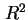 ซึ่งเป็นค่าความน่าเชื่อถือที่ทั้งสองโมดูลสามารถทำงานได้อย่างถูกต้อง รูป 11.9 แสดงผลกระทบจากการคุ้มครองจากความเสียหายของระบบขนานที่ประกอบด้วยสองโมดูล
Figure 11.9:
ผลกระทบจากการคุ้มครองจากความเสียหายของระบบแบบขนานที่ประกอบด้วยสองโมดูล โดยที่ระบบจะทำการเปรียบเทียบเอาท์พุทที่ได้จากทั้งสองโมดูลเพื่อทำการตรวจสอบข้อผิดพลาด และหาโมดูลที่เสีย
|
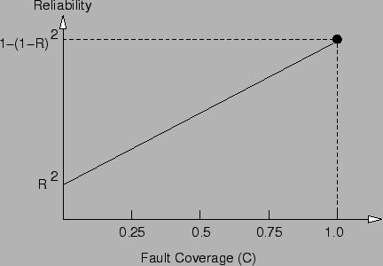
|
Next: หัวข้อสรุป
Up: ตัวอย่างการวิเคราะห์ความน่าเชื่อถือ และการคุ้มครองจากความเสียหาย
Previous: ตัวอย่าง: การคำนวณค่าความน่าเชื่อถือของระบบขนาน
Contents
Index
Vara Varavithya
2002-03-09